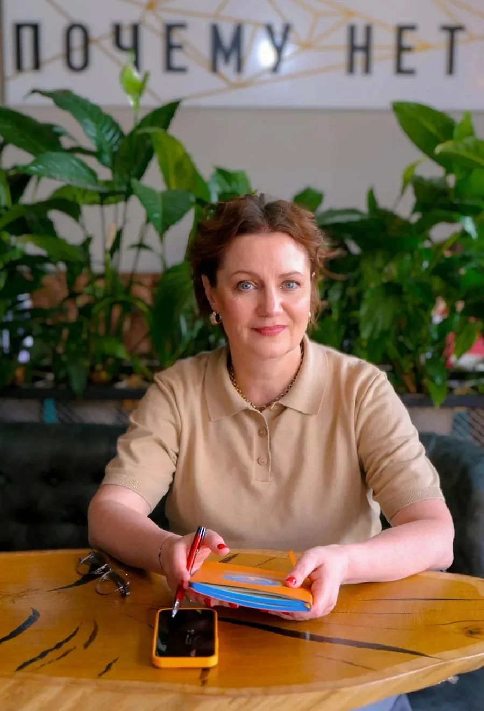
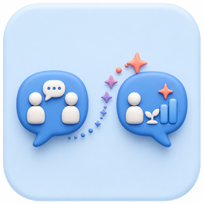

Начинаете практику и хотите стать востребованным специалистом
Бесплатная лекция для психологов
Психолог
в эпоху ИИ
Как стать востребованным экспертом, которого выбирают
Зарегистрироваться бесплатно
Кто ведёт встречу
Юлия Владимировна Масловская
Психолог-практик, преподаватель Академии КСП
Более 10 лет работает с клиентами и обучает практикующих психологов. Помогает коллегам находить свою профессиональную позицию и оставаться востребованными специалистами в условиях быстро меняющегося рынка.
- Практикующий психолог, специализация — краткосрочная стратегическая терапия
- Автор образовательных программ для психологов
- Ведёт открытые лекции и разборы кейсов для профессионального сообщества
Для кого
Как сохранить свою ценность в эпоху ИИ

Уже работаете с клиентами и замечаете, как меняется профессия
Хотите использовать ИИ с пользой, не теряя профессиональной позиции
Ищете навыки, которые помогут выделиться среди других экспертов
Что будет на встрече
Поговорим о том, что уже меняется в профессии
Без громких прогнозов — о реальных изменениях, рисках и новых возможностях для психолога.
01
Как ИИ влияет на работу психолога
Что уже меняется в профессии и ожиданиях клиентов.
02
Что можно доверить нейросетям
Где технологии помогают, а где нужен специалист.
03
Какие компетенции становятся ценнее
На чём строится экспертность, которую нельзя заменить шаблоном.
04
Почему выбирают конкретного психолога
Что помогает укреплять доверие и профессиональную позицию.
Главный вопрос лекции
Сможет ли ИИ заменить психолога?
Разберём, в чём технологии действительно сильны — и где ценность живого специалиста становится только заметнее.
- 01Почему клиенты продолжают обращаться к специалистам?
- 02За что человек готов платить психологу?
- 03Какие навыки невозможно заменить алгоритмами?
- 04Как использовать ИИ и сохранять самостоятельность мышления?
- 05Что развивать уже сейчас, чтобы оставаться востребованным?
Регистрация
Зарегистрируйтесь на открытую лекцию
Оставьте данные, чтобы получить ссылку на встречу и напоминание перед началом.
Дата18 августа
Время18:30 мск
СтоимостьБесплатно
Ответы на вопросы
Всё важное перед встречей
Как пройдёт лекция?
Онлайн, 18 августа в 18:30 по московскому времени. Ссылка на эфир появится в канале встречи.
Участие бесплатное?
Да. Необходимо только заранее зарегистрироваться.
Где появится ссылка на эфир?
В канале открытых лекций. Перейти в него можно сразу после регистрации.
Подойдёт ли лекция начинающим?
Да. Встреча рассчитана и на начинающих, и на практикующих психологов.
Будет ли запись?
Информация о записи появится в канале встречи. Рекомендуем запланировать участие в прямом эфире.